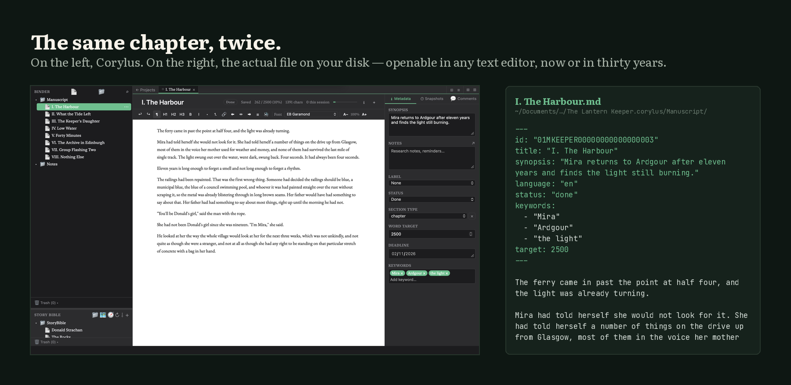
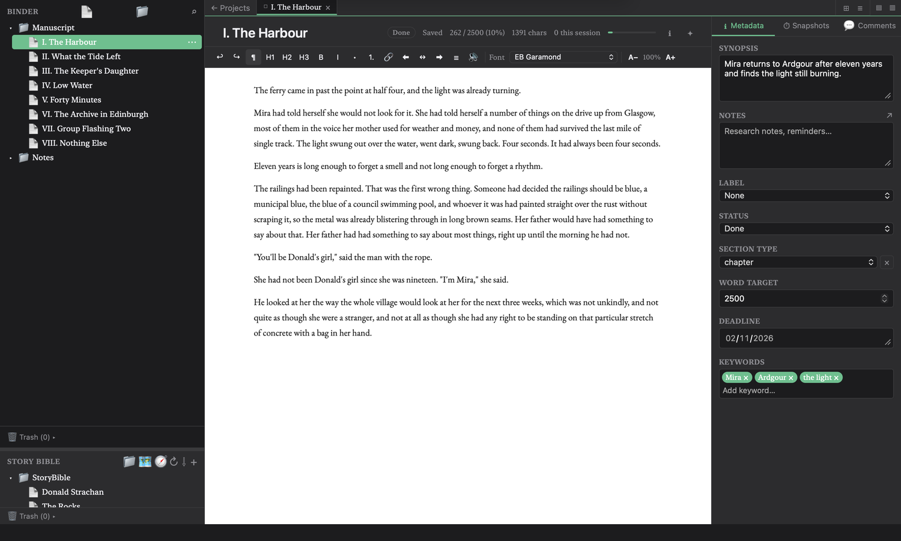

Your novel should outlive the app you wrote it in.
Corylus is a writing tool for long work — the organisation of a professional writing studio, built on plain Markdown files in a folder you own.
Download for macOS version 1.91.0 Download for Windows version 1.90.1
Free. No account. macOS, Windows, iPhone, iPad and Android.
Files on disk, not a format you cannot open
Most writing software for long work puts your manuscript into a database, a bundle, or a cloud account, and you can only reach it through the one application that understands it. That is fine until the application stops being maintained, or changes its pricing, or you change computers.
Corylus keeps every document as a plain Markdown file in a normal folder on your own disk. Not as an export option — as the live format. Open the folder while the app is running and your chapters are there, readable in any text editor. The database Corylus uses is a cache it rebuilds from those files, not where your work lives.
If Corylus vanished tomorrow, your entire body of work would still be clean, portable, future-proof text.
My novel.corylus/
├── settings.json
├── Manuscript/
│ ├── Chapter I.md
│ ├── Chapter II.md
│ └── Chapter III.md
├── StoryBible/
│ ├── Characters/
│ └── Places/
└── Snapshots/
└── Chapter I/
└── 2026-11-02T09-14-22.md

What it does

Binder
Folders, chapters and scenes in a tree you can drag around. A novel is 200 pieces, not one document.
Corkboard & outliner
The same structure as index cards or as a table of synopses, statuses and word counts.
Story Bible
Characters, places, objects and notes, with relationships, backlinks and templates for the kind of thing each one is.
Snapshots
Every draft of every document, with a full diff and one-click rollback. Plain timestamped files — no Git required.
Compile
Assemble the binder in order and export to Word, PDF or EPUB, with real typography.
Spelling & grammar
Hunspell spell-check with a per-project dictionary, and an optional LanguageTool engine that runs locally.
Read aloud
Hear your prose in your system's voices, or download natural neural voices that run on your own machine.
Your own sync
Optional sync to your WebDAV, Dropbox or Drive. Atomic, conflict-aware writes. There is no Corylus server.
Nothing leaves your machine
No account
There is no sign-up, because there is nothing to sign up to.
No server
Corylus has no backend. Sync, if you want it, goes somewhere you control.
Local AI only
Grammar, natural voices and the assistant are optional downloads that run on your own hardware. Your manuscript is never uploaded, because there is nowhere to upload it to.
Open format
YAML front matter and Markdown. Readable in 2045 with a text editor.
In English and Spanish
Interface, spell-check, grammar, thesaurus and reading voices — in both languages, not a translated menu bar. Most writing software treats Spanish as an afterthought.
Support the work
Corylus is built by one person and is free, with nothing behind a paywall. Support pays for the developer certificates that make it install like a real app, and then for the time to keep building it.
What support pays for
$99 / year
Apple Developer Program. This is what removes the “developer cannot be verified” warning on macOS, and the only sane way to get iPhone and iPad builds to testers.
$200–400 / year
A Windows code-signing certificate, so SmartScreen stops telling people the installer is suspicious.
$25 once
The Google Play developer account.
Then: time
Corylus is currently built in the gaps around other work.
Get Corylus
Download for macOS Download for Windows
iPhone, iPad and Android builds exist and are tested on real devices, but are not on the stores yet — that needs developer accounts. Build them from source, or wait for the stores.
Corylus is not notarized yet. macOS will say the developer cannot be verified: right-click Corylus.app, choose Open, then Open again. Once per download. Fixing that properly costs $99 a year, which is the first thing support pays for.